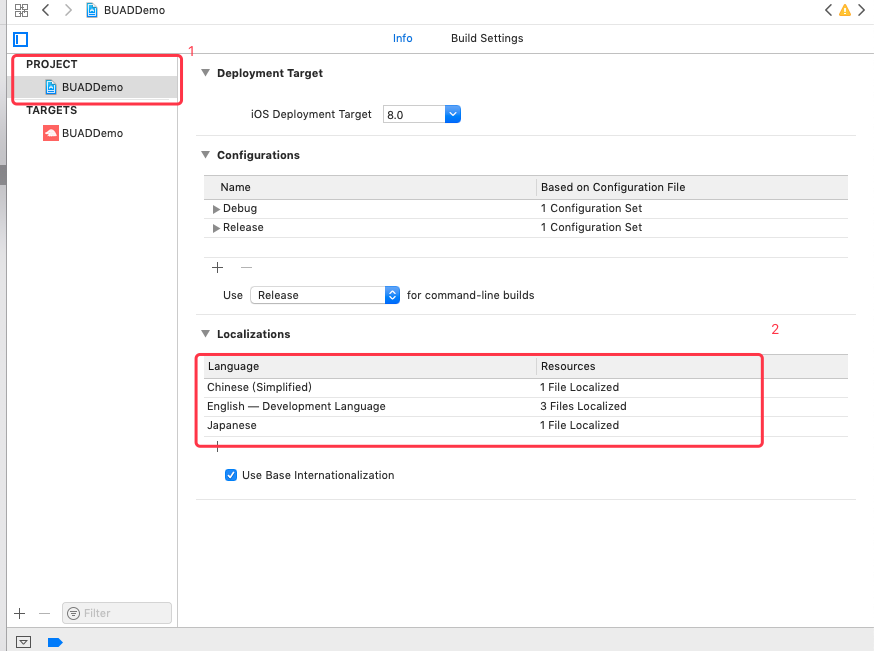

| 文档版本 | 修订日期 | 修订说明 |
|---|---|---|
| v1.0.0 | 2017-6-23 | 创建文档，支持Banner，信息流广告 |
| v1.1.0 | 2017-7-21 | 优化接口字段，数据加密 |
| v1.1.1 | 2017-7-30 | 优化事件回调接口 |
| v1.2.0 | 2017-9-17 | 新增开屏、插屏广告 |
| v1.3.2 | 2017-12-28 | bug fix 插屏转屏，webview 无返回按钮 |
| v1.4.0 | 2017-12-2 | 新增banner轮播，视频广告 |
| v1.5.0 | 2018-01-29 | 新增激励视频 |
| v1.5.1 | 2018-02-06 | 解决符号冲突问题 |
| v1.5.2 | 2018-03-01 | 解决Feed曝光量为0 |
| v1.8.0 | 2018-03-28 | 激励视频纵向支持与横向展示修复 |
| v1.8.1 | 2018-04-11 | 修复UIView分类可能与媒体重名问题 |
| v1.8.2 | 2018-04-12 | 修复WebView页面NavigationBar显示问题 |
| v1.8.3 | 2018-04-25 | 【1】新增AdMob通过CustomEvent Adapter方式聚合Demo 【2】修复激励视频iPhone X、ipad适配问题【3】App Store页面支持横向展示 |
| v1.8.4 | 2018-05-02 | 声音播放同步设备静音模式，使静音模式下不播放激励视频声音 |
| v1.9.0 | 2018-05-04 | 【1】优化开屏广告SDK的请求缓存逻辑 【2】修复原生视频详情页转屏问题 |
| v1.9.1 | 2018-05-10 | 【1】解决开屏跳转问题【2】修改跳转deepLink情况下跳转逻辑 |
| v1.9.2 | 2018-05-16 | 【1】解决激励视频奖励问题【2】解决屏幕旋转问题【3】解决iOS8 crash问题【4】解决webView导航条在iPhone X上适配问题 |
| v1.9.3 | 2018-06-12 | 【1】广告支持第三方检测链接和逻辑优化 |
| v1.9.4 | 2018-06-12 | 【1】激励视频encard页面预缓存【2】原生视频优化【3】SDK对外接口优化 |
| v1.9.4.1 | 2018-08-23 | 【1】增加反作弊策略 |
| v1.9.5 | 2018-08-31 | 【1】新增全屏视频广告类型【2】原生广告新增banner和插屏模板，支持原生banner样式，原生插屏样式【3】兼容iOS6、iOS7，但不支持iOS6与iOS7中展现广告【4】原生广告（视频、图文）通用性扩充，不依赖于WMTableViewCell，支持在UIView中展示，同时也支持UITableView、UICollectionView、UIScrollView等列表视图中展示 |
| v1.9.6.0 | 2018-09-13 | 【1】修改开屏代理回调的命名,spalsh改为splash【2】插屏样式微调【3】新增开屏超时策略的埋点 |
| v1.9.6.1 | 2018-09-25 | 【1】修复激励视频预加载转屏问题 |
| v1.9.6.2 | 2018-10-17 | 【1】修复webView落地页横屏不支持问题 |
| v1.9.7.0 | 2018-11-17 | 【1】激励视频和全屏视频增加回调时机，已经展示、即将关闭【2】添加原生视频预缓存的功能【3】增加激励视频预缓存功能【4】增加AppStore预缓存功能【5】增加竖版原生视频(draw视频)【6】支持pod方式接入【7】修改原生banner Logo大小【8】修复广告落地页present弹出方式下没有title的问题【9】支持开屏展示大小外部设定【10】品牌升级，SDK的前缀WM替换成BU（BytedanceUnion） |
| v1.9.7.1 | 2018-11-29 | 【1】激励视频和全屏视频同时请求，后者覆盖前者【2】激励视频奖励回调失败【3】激励视频缓存优化 |
| v1.9.8.0 | 2018-11-30 | 【1】新增对外字段，app评分、评论人数、安装包大小等【2】开屏广告支持gif【3】全屏视频支持跳过时间配置【4】CustomEvent聚合Mopub、Admob，输出demo【5】激励视频、全屏视频落地页类型广告增加点击回调【6】强化安全性 |
| v1.9.8.1 | 2018-11-30 | 【1】支持appstore横屏 |
| v1.9.8.2 | 2018-12-19 | 【1】支持落地页横屏 |
| v1.9.8.5 | 2019-01-11 | 【1】修复32bit机型，落地页偶现crash情况 |
| v1.9.9.0 | 2019-01-11 | 【1】dislike【2】双端增加打开落地页增加loading状态【3】接口加密升级【4】激励视频配置bar |
| v1.9.9.1 | 2019-01-12 | 【1】修复32bit机型，落地页偶现crash情况 |
| v1.9.9.2 | 2019-03-01 | 【1】优化UA【2】激励视频声音场景优化 |
| v1.9.9.5 | 2019-04-09 | 【1】安全校验 |
| v2.0.0.0 | 2019-03-20 | 【1】海外版激励视频+全屏视频【2】原生模板广告【3】激励视频支持关闭可配、延迟关闭【4】支持原生广告竖版图片样式 |
| v2.0.1.1 | 2019-04-12 | 【1】动态布局 |
| v2.0.1.3 | 2019-04-26 | 【1】动态布局网络缓存策略调整 |
| v2.0.1.4 | 2019-05-28 | 【1】修复广告接口请求问题 |
| v2.0.1.7 | 2019-05-30 | 【1】去掉不需要的依赖库 |
| v2.1.0.0 | 2019-05-14 | 【1】跳转落地页、appstore返回增加回调 【2】激励视频、全屏视频缓存逻辑优化 【3】激励视频、全屏视频增加声音控制 |
| v2.1.0.2 | 2019-07-09 | 【1】解决低版本xcode打包问题 【2】支持banner和插屏广告的动态布局模板广告，并优化模板广告场景 |
请向头条联盟穿山甲平台申请AppID 和广告 SlotID。
获取 framework 文件后直接将 {BUAdSDK.framework, BUAdSDK.bundle}文件拖入工程即可。
拖入时请按以下方式选择：
拖入完请确保Copy Bundle Resources中有BUAdSDK.bundle，否则可能出现incon图片加载不出来的情况。

SDK1982版本以后支持pod方式接入，只需配置pod环境，在podfile文件中加入以下代码即可接入成功。
pod 'Bytedance-UnionAD', '~> 1.9.8.2'
更多关于pod方式的接入请参考 gitthub地址
注意要添加的系统库
添加 App Transport Security Settings，先点击左侧展开箭头，再点右侧加号，Allow Arbitrary Loads 选项自动加入，修改值为 YES。 SDK API 已经全部支持HTTPS，但是广告主素材存在非HTTPS情况。
<key>NSAppTransportSecurity</key>
<dict>
<key>NSAllowsArbitraryLoads</key>
<true/>
</dict>
具体操作如图：

具体操作如图：

工程需要在TARGETS -> Build Phases中找到Link Binary With Libraries，点击“+”，依次添加下列依赖库
具体操作如图所示：

注意 : 开发者必须在这里设置所支持的语言,否则会有语言显示的问题.
例如 : 支持中文 添加 Chinese

Note：由于品牌升级自1.9.7.0版本SDK的前缀WM替换成BU（BytedanceUnion），若SDK需要升级，辛苦接入时统一替换
BUAdSDKManager 类是整个 SDK 设置的入口和接口，可以设置 SDK 的一些全局信息，提供类方法获取设置结果。
目前接口提供以下几个类方法
/**
Register the App key that’s already been applied before requesting an ad from Tiktok Ad Network.
@param appID : the unique identifier of the App
*/
+ (void)setAppID:(NSString *)appID;
/**
Configure development mode.
@param level : default BUAdSDKLogLevelNone
*/
+ (void)setLoglevel:(BUAdSDKLogLevel)level;
/// Set the gender of the user.
+ (void)setUserGender:(BUUserGender)userGender;
/// Set the age of the user.
+ (void)setUserAge:(NSUInteger)userAge;
/// Set the user's keywords, such as interests and hobbies, etc.
+ (void)setUserKeywords:(NSString *)keywords;
/// set additional user information.
+ (void)setUserExtData:(NSString *)data;
/// Set whether the app is a paid app, the default is a non-paid app
+ (void)setIsPaidApp:(BOOL)isPaidApp;
+ (NSString *)appID;
+ (BOOL)isPaidApp;
SDK 需要在 AppDelegate 的方法 - (BOOL)application:(UIApplication *)application didFinishLaunchingWithOptions:(NSDictionary *)launchOptions 里进行初始化
其中以下设置是 必须 的，应用相关 appID 设置：
[BUAdSDKManager setAppID:@"xxxxxx"];
更多使用方式可以参见 SDK Demo 工程
类型说明： 广告原生广告即一般广告样式，形式分为图文和视频，按场景又可区分为原生banner、原生插屏广告等。
使用说明： 在SDK里只需要使用 BUNativeAd 就可以获取原生广告，BUNativeAd 类提供了原生广告的数据类型等各种信息，在数据获取后可以在属性 data（BUMaterialMeta）里面获取广告数据信息。BUNativeAd还提供原生广告的数据绑定、点击事件的上报，用户可自行定义信息流广告展示形态与布局。
BUNativeAd 类为加载广告的接口类，可以通过数据接口每次请求一个广告数据，并能协助 UIView 注册处理各种广告点击事件，设置delegate后可获取数据。rootViewController是必传参数，是弹出落地页广告ViewController的。
备注:一次请求多条广告数据请使用BUNativeAdsManager，参考2.3
/**
Abstract ad slot containing ad data loading, response callbacks.
BUNativeAd currently supports native ads.
Native ads include in-feed ad (multiple ads, image + video), general native ad (single ad, image + video), native banner ad, and native interstitial ad.
Support interstitial ad, banner ad, splash ad, rewarded video ad, full-screen video ad.
*/
@interface BUNativeAd : NSObject
/**
Ad slot description.
*/
@property (nonatomic, strong, readwrite, nullable) BUAdSlot *adslot;
/**
Ad slot material.
*/
@property (nonatomic, strong, readonly, nullable) BUMaterialMeta *data;
/**
The delegate for receiving state change messages.
The delegate is not limited to viewcontroller.
The delegate can be set to any object which conforming to <BUNativeAdDelegate>.
*/
@property (nonatomic, weak, readwrite, nullable) id<BUNativeAdDelegate> delegate;
/**
required.
Root view controller for handling ad actions.
Action method includes 'pushViewController' and 'presentViewController'.
*/
@property (nonatomic, weak, readwrite) UIViewController *rootViewController;
/**
Initializes native ad with ad slot.
@param slot : ad slot description.
including slotID,adType,adPosition,etc.
@return BUNativeAd
*/
- (instancetype)initWithSlot:(BUAdSlot *)slot;
/**
Register clickable views in native ads view.
Interaction types can be configured on Tiktok Ad Network.
Interaction types include view video ad details page, make a call, send email, download the app, open the webpage using a browser,open the webpage within the app, etc.
@param containerView : required.
container view of the native ad.
@param clickableViews : optional.
Array of views that are clickable.
*/
- (void)registerContainer:(__kindof UIView *)containerView
withClickableViews:(NSArray<__kindof UIView *> *_Nullable)clickableViews;
/**
Unregister ad view from the native ad.
*/
- (void)unregisterView;
/**
Actively request nativeAd datas.
*/
- (void)loadAdData;
@end
比如在一个VC里面，通过方法 loadNativeAd 加载广告
- (void)loadNativeAd {
BUNativeAd *nad = [BUNativeAd new];
BUAdSlot *slot1 = [[BUAdSlot alloc] init];
BUSize *imgSize1 = [[BUSize alloc] init];
imgSize1.width = 1080;
imgSize1.height = 1920;
slot1.ID = @"900480107";
slot1.AdType = BUAdSlotAdTypeFeed;
slot1.position = BUAdSlotPositionTop;
slot1.imgSize = imgSize1;
slot1.isSupportDeepLink = YES;
nad.adslot = slot1;
nad.rootViewController = self;
nad.delegate = self;
self.ad = nad;
[nad loadAdData];
}
在创建 BUNativeAd 对象后，需要给这个对象设置回调代理，这样就可以在数据返回后更新展示视图。回调代理见 BUNativeAdDelegate 介绍。
@protocol BUNativeAdDelegate <NSObject>
@optional
/**
This method is called when native ad material loaded successfully.
*/
- (void)nativeAdDidLoad:(BUNativeAd *)nativeAd;
/**
This method is called when native ad materia failed to load.
@param error : the reason of error
*/
- (void)nativeAd:(BUNativeAd *)nativeAd didFailWithError:(NSError *_Nullable)error;
/**
This method is called when native ad slot has been shown.
*/
- (void)nativeAdDidBecomeVisible:(BUNativeAd *)nativeAd;
/**
This method is called when native ad is clicked.
*/
- (void)nativeAdDidClick:(BUNativeAd *)nativeAd withView:(UIView *_Nullable)view;
/**
This method is called when the user clicked dislike reasons.
Only used for dislikeButton in BUNativeAdRelatedView.h
@param filterWords : reasons for dislike
*/
- (void)nativeAd:(BUNativeAd *)nativeAd dislikeWithReason:(NSArray<BUDislikeWords *> *)filterWords;
@end
BUNativeAd 设置 delegate 后，我们可以在 delegate 里添加如下回调方法，负责处理广告数据返回以及各种自定义的点击事件。
如上面例子中nativeAdDidLoad方法获取数据后，负责更新视图，并注册绑定了相应的点击事件
- (void)nativeAdDidLoad:(BUNativeAd *)nativeAd {
self.infoLabel.text = nativeAd.data.AdTitle;
BUMaterialMeta *adMeta = nativeAd.data;
CGFloat contentWidth = CGRectGetWidth(_customview.frame) - 20;
BUImage *image = adMeta.imageAry.firstObject;
const CGFloat imageHeight = contentWidth * (image.height / image.width);
CGRect rect = CGRectMake(10, CGRectGetMaxY(_phoneButton.frame) + 5, contentWidth, imageHeight);
if (adMeta.imageMode == BUFeedVideoAdModeImage) {
self.imageView.hidden = YES;
self.relatedView.videoAdView.hidden = NO;
self.relatedView.videoAdView.frame = rect;
[self.relatedView refeshData:nativeAd];
} else {
self.imageView.hidden = NO;
self.relatedView.videoAdView.hidden = YES;
if (adMeta.imageAry.count > 0) {
if (image.imageURL.length > 0) {
self.imageView.frame = rect;
[self.imageView setImageWithURL:[NSURL URLWithString:image.imageURL] placeholderImage:nil];
}
}
}
// Register UIView with the native ad; the whole UIView will be clickable.
[nativeAd registerContainer:self.customview withClickableViews:@[self.infoLabel, self.phoneButton, self.downloadButton, self.urlButton]];
}
- (void)nativeAd:(BUNativeAd *)nativeAd didFailWithError:(NSError *_Nullable)error {
}
- (void)nativeAdDidClick:(BUNativeAd *)nativeAd withView:(UIView *)view {
}
- (void)nativeAdDidBecomeVisible:(BUNativeAd *)nativeAd {
}
更多例子可以参照 SDK Demo。
BUAdSlot 对象为加载广告时需要设置的广告位描述信息，在BUNativeAd、BUNativeAdsManager、BUBannerAdView、BUInterstitialAd、BUSplashAdView、BUFullscreenVideoAd、BURewardedVideoAd中均需要初始化阶段传入。在加载广告前，必须须设置好。
@interface BUAdSlot : NSObject
/// required. The unique identifier of a native ad.
@property (nonatomic, copy) NSString *ID;
/// required. Ad type.
@property (nonatomic, assign) BUAdSlotAdType AdType;
/// required. Ad display location.
@property (nonatomic, assign) BUAdSlotPosition position;
/// Accept a set of image sizes, please pass in the BUSize object.
@property (nonatomic, strong) NSMutableArray<BUSize *> *imgSizeArray;
/// required. Image size.
@property (nonatomic, strong) BUSize *imgSize;
/// Icon size.
@property (nonatomic, strong) BUSize *iconSize;
/// Maximum length of the title.
@property (nonatomic, assign) NSInteger titleLengthLimit;
/// Maximum length of description.
@property (nonatomic, assign) NSInteger descLengthLimit;
/// Whether to support deeplink.
@property (nonatomic, assign) BOOL isSupportDeepLink;
/// Native banner ads and native interstitial ads are set to 1, other ad types are 0, the default is 0.
@property (nonatomic, assign) BOOL isOriginAd;
- (NSDictionary *)dictionaryValue;
@end
我们以BUNativeAd为例，初始化一个 BUAdSlot 对象，传给 BUNativeAd，这样BUNativeAd会根据 BUAdSlot 对象来获取合适的广告信息，参考代码如下：
- (void)loadNativeAd {
BUNativeAd *nad = [BUNativeAd new];
BUAdSlot *slot1 = [[BUAdSlot alloc] init];
BUSize *imgSize1 = [[BUSize alloc] init];
imgSize1.width = 1080;
imgSize1.height = 1920;
slot1.ID = @"900480107";
slot1.AdType = BUAdSlotAdTypeFeed;
slot1.position = BUAdSlotPositionTop;
slot1.imgSize = imgSize1;
slot1.isSupportDeepLink = YES;
nad.adslot = slot1;
nad.delegate = self;
nad.rootViewController = self;
self.ad = nad;
[nad loadAdData];
}
如上述例子所示，BUNativeAd 对象在初始化完成后，给其设置了一个 BUAdSlot 对象，表明对象是原生广告
可以参见 SDK Demo 以及 BUAdSlot 头文件了解更多信息与使用方法
广告数据的载体类 BUMaterialMeta ，访问可以获取所有的广告属性。
@interface BUMaterialMeta : NSObject <NSCoding>
/// interaction types supported by ads.
@property (nonatomic, assign) BUInteractionType interactionType;
/// material pictures.
@property (nonatomic, strong) NSArray<BUImage *> *imageAry;
/// ad logo icon.
@property (nonatomic, strong) BUImage *icon;
/// ad headline.
@property (nonatomic, copy) NSString *AdTitle;
/// ad description.
@property (nonatomic, copy) NSString *AdDescription;
/// ad source.
@property (nonatomic, copy) NSString *source;
/// text displayed on the creative button.
@property (nonatomic, copy) NSString *buttonText;
/// display format of the in-feed ad, other ads ignores it.
@property (nonatomic, assign) BUFeedADMode imageMode;
/// Star rating, range from 1 to 5.
@property (nonatomic, assign) NSInteger score;
/// Number of comments.
@property (nonatomic, assign) NSInteger commentNum;
/// ad installation package size, unit byte.
@property (nonatomic, assign) NSInteger appSize;
/// media configuration parameters.
@property (nonatomic, strong) NSDictionary *mediaExt;
另外我们还需要 BUNativeAd 实例，通过 loadData 方法获取信息流广告的数据。
相关视图类可以为添加logo、广告标签、视频视图、不喜欢按钮等。
@interface BUNativeAdRelatedView : NSObject
/**
Need to actively add to the view in order to deal with the feedback and improve the accuracy of ad.
*/
@property (nonatomic, strong, readonly, nullable) UIButton *dislikeButton;
/**
Promotion label.Need to actively add to the view.
*/
@property (nonatomic, strong, readonly, nullable) UILabel *adLabel;
/**
Ad logo.Need to actively add to the view.
*/
@property (nonatomic, strong, readonly, nullable) UIImageView *logoImageView;
/**
Ad logo + Promotion label.Need to actively add to the view.
*/
@property (nonatomic, strong, readonly, nullable) UIImageView *logoADImageView;
/**
Video ad view. Need to actively add to the view.
*/
@property (nonatomic, strong, readonly, nullable) BUVideoAdView *videoAdView;
/**
Refresh the data every time you get new datas in order to show ad perfectly.
*/
- (void)refreshData:(BUNativeAd *)nativeAd;
@end
添加logo、广告标签、视频视图、不喜欢按钮请参考BUNativeAdRelatedView类,每次获取物料信息后需要刷新调用-(void)refreshData:(BUNativeAd *)nativeAd 方法刷新对应的视图绑定的数据.
通过不感兴趣类可以为原生广告自定义不感兴趣的样式渲染。
/**
!!! important :
Please report to the sdk the user’s selection, inaccurate model will result in poor ad performance.
*/
@interface BUDislike : NSObject
/**
The array of BUDislikeWords which have reasons for dislike.
The application can show the secondary page for dislike if '[filterWords.options count] > 0'.
*/
@property (nonatomic, copy, readonly) NSArray<BUDislikeWords *> *filterWords;
/**
Initialize with nativeAd to get filterWords.
return BUDislike
*/
- (instancetype)initWithNativeAd:(BUNativeAd *)nativeAd;
/**
Call this method after the user chose dislike reasons.
(Only for object which uses 'BUDislike.filterWords')
@param filterWord : reasons for dislike
@note : don't need to call this method if '[filterWords.options count] > 0'.
@note :please dont't change 'BUDislike.filterWords'.
'filterWord' must be one of 'BUDislike.filterWords', otherwise it will be filtered.
*/
- (void)didSelectedFilterWordWithReason:(BUDislikeWords *)filterWord;
使用不感兴趣类必须确保用户点击后调用接口将原因上报
BUNativeAd 对象设置好 BUAdSlot 对象和 delegate（>= V1.8.2 不必一定是 UIViewController）之后，就可以调用 loadAdData 方法异步获取广告数据；获取数据后，delegate 会负责处理回调方法。
在使用原生广告数据时，我们先创建我们需要展示广告数据的 View。
示例代码：
CGFloat swidth = [[UIScreen mainScreen] bounds].size.width;
_customview = [[UIView alloc] initWithFrame:CGRectMake(20, 0, swidth - 40, 240)];
_customview.backgroundColor = [UIColor grayColor];
[self.contentView addSubview:_customview];
_titleLabel = [[UILabel alloc] initWithFrame:CGRectMake(10, 10, swidth - 60, 30)];
_titleLabel.text = [NSString localizedStringForKey:Testads];
[_customview addSubview:_titleLabel];
_adImageView = [[UIImageView alloc] initWithFrame:CGRectMake(10, 75, 160, 120)];
_adImageView.userInteractionEnabled = YES;
_adImageView.backgroundColor = [UIColor redColor];
[_customview addSubview:_adImageView];
_phoneButton = [[UIButton alloc] initWithFrame:CGRectMake(swidth - 50, 75, -80, 30)];
[_phoneButton setTitle:[NSString localizedStringForKey:Call] forState:UIControlStateNormal];
_phoneButton.userInteractionEnabled = YES;
_phoneButton.backgroundColor = [UIColor orangeColor];
[_customview addSubview:_phoneButton];
_downloadButton = [[UIButton alloc] initWithFrame:CGRectMake(swidth - 50, 120, -80, 30)];
[_downloadButton setTitle:[NSString localizedStringForKey:DownloadLinks] forState:UIControlStateNormal];
_downloadButton.userInteractionEnabled = YES;
_downloadButton.backgroundColor = [UIColor orangeColor];
[_customview addSubview:_downloadButton];
_urlButton = [[UIButton alloc] initWithFrame:CGRectMake(swidth - 50, 165, -80, 30)];
[_urlButton setTitle:[NSString localizedStringForKey:URLLinks] forState:UIControlStateNormal];
_urlButton.userInteractionEnabled = YES;
_urlButton.backgroundColor = [UIColor orangeColor];
[_customview addSubview:_urlButton];
视情况为广告视图添加logo，广告标签，不喜欢按钮等view。 示例代码：
// add video view
[_customview addSubview:self.relatedView.videoAdView];
// add logo view
self.relatedView.logoImageView.frame = CGRectZero;
[_customview addSubview:self.relatedView.logoImageView];
// add dislike view
self.relatedView.dislikeButton.frame = CGRectMake(CGRectGetMaxX(_infoLabel.frame) - 20, CGRectGetMaxY(_infoLabel.frame)+5, 24, 20);
[_customview addSubview:self.relatedView.dislikeButton];
// add ad lable
self.relatedView.adLabel.frame = CGRectZero;
[_customview addSubview:self.relatedView.adLabel];
// add ad lable+logo
UIImageView *logoADImageView = [[UIImageView alloc] initWithImage:self.relatedView.logoADImageView.image];
CGFloat logoIconX = CGRectGetWidth(adImageView.bounds) - logoSize.width - margin;
CGFloat logoIconY = imageViewHeight - logoSize.height - margin;
logoADImageView.frame = CGRectMake(logoIconX, logoIconY, logoSize.width, logoSize.height);
[_customview addSubview:logoADImageView];
在用户获取到 BUNativeAd 广告数据后，如有需要可以注册绑定点击的 View，包含图片、按钮等等。
BUNativeAd 类提供了如下方法，供开发者使用处理不同的事件响应；使用该方法时，请设置 BUNativeAd的代理属性id
说明：BUNativeAd注册view具体点击事件（跳转广告页，下载，打电话；具体事件类型来自 BUNativeAd 请求获得的数据）行为由 SDK 控制
示例代码：
- (void)nativeAdDidLoad:(BUNativeAd *)nativeAd {
self.infoLabel.text = nativeAd.data.AdTitle;
BUMaterialMeta *adMeta = nativeAd.data;
CGFloat contentWidth = CGRectGetWidth(_customview.frame) - 20;
BUImage *image = adMeta.imageAry.firstObject;
const CGFloat imageHeight = contentWidth * (image.height / image.width);
CGRect rect = CGRectMake(10, CGRectGetMaxY(_actionButton.frame) + 5, contentWidth, imageHeight);
self.relatedView.logoImageView.frame = CGRectMake(CGRectGetMaxX(rect) - 15 , CGRectGetMaxY(rect) - 15, 15, 15);
self.relatedView.adLabel.frame = CGRectMake(CGRectGetMinX(rect), CGRectGetMaxY(rect) - 14, 26, 14);
if (adMeta.imageMode == BUFeedVideoAdModeImage) {
self.imageView.hidden = YES;
self.relatedView.videoAdView.hidden = NO;
self.relatedView.videoAdView.frame = rect;
[self.relatedView refeshData:nativeAd];
} else {
self.imageView.hidden = NO;
self.relatedView.videoAdView.hidden = YES;
if (adMeta.imageAry.count > 0) {
if (image.imageURL.length > 0) {
self.imageView.frame = rect;
[self.imageView setImageWithURL:[NSURL URLWithString:image.imageURL] placeholderImage:nil];
}
}
}
// Register UIView with the native ad; the whole UIView will be clickable.
[nativeAd registerContainer:self.customview withClickableViews:@[self.infoLabel, self.actionButton]];
}
- (void)nativeAd:(BUNativeAd *)nativeAd didFailWithError:(NSError *_Nullable)error {
}
- (void)nativeAdDidClick:(BUNativeAd *)nativeAd withView:(UIView *)view {
}
- (void)nativeAdDidBecomeVisible:(BUNativeAd *)nativeAd {
}
BUNativeAd 的 delegate 里可以处理几种代理方法，参见上面的示例代码
在回调代理方法里面我们可以处理注册视图点击、广告可见回调并加载广告错误等信息
BUNativeAdsManager 类可以一次请求获取多个广告数据，其对象声明如下：
@interface BUNativeAdsManager : NSObject
@property (nonatomic, strong, nullable) BUAdSlot *adslot;
@property (nonatomic, strong, nullable) NSArray<BUNativeAd *> *data;
/// The delegate for receiving state change messages such as requests succeeding/failing.
/// The delegate can be set to any object which conforming to <BUNativeAdsManagerDelegate>.
@property (nonatomic, weak, nullable) id<BUNativeAdsManagerDelegate> delegate;
- (instancetype)initWithSlot:(BUAdSlot * _Nullable) slot;
/**
It is recommended to request no more than 3 ads.
The maximum is 10.
*/
- (void)loadAdDataWithCount:(NSInteger)count;
@end
使用方法类似 BUNativeAd，初始化 BUNativeAdsManager 对象之后，设置好 BUAdSlot，通过loadAdDataWithCount: 方法来获取一组广告数据，其中loadAdDataWithCount: 方法能够根据 count 次数请求数据，数据获取后，同样通过 delegate 来处理回调参见下面代码示例：
- (void)loadNativeAds {
BUNativeAdsManager *nad = [BUNativeAdsManager new];
BUAdSlot *slot1 = [[BUAdSlot alloc] init];
slot1.ID = self.viewModel.slotID;
slot1.AdType = BUAdSlotAdTypeFeed;
slot1.position = BUAdSlotPositionTop;
slot1.imgSize = [BUSize sizeBy:BUProposalSize_Feed690_388];
slot1.isSupportDeepLink = YES;
nad.adslot = slot1;
nad.delegate = self;
self.adManager = nad;
[nad loadAdDataWithCount:3];
}
- (void)nativeAdsManagerSuccessToLoad:(BUNativeAdsManager *)adsManager nativeAds:(NSArray<BUNativeAd *> *_Nullable)nativeAdDataArray {
BUD_Log(@"feed datas load success");
for (BUNativeAd *model in nativeAdDataArray) {
NSUInteger index = rand() % (self.dataSource.count-3)+2;
[self.dataSource insertObject:model atIndex:index];
}
[self.tableView reloadData];
}
- (void)nativeAdsManager:(BUNativeAdsManager *)adsManager didFailWithError:(NSError *_Nullable)error {
BUD_Log(@"DrawVideo datas load fail");
}
BUNativeAdsManager请求结果可获取到一组BUNativeAd，每一个BUNativeAd实则对应一条广告位。BUNativeAd需要按照自身用法，注册视图、设置delegate和rootviewController，请参考原生广告。
- (UITableViewCell *)tableView:(UITableView *)tableView cellForRowAtIndexPath:(NSIndexPath *)indexPath {
// For ad cells just as the ad cell provider, for normal cells do whatever you would do.
BOOL isVideoCell = NO;
NSUInteger index = indexPath.row;
id model = self.dataSource[index];
if ([model isKindOfClass:[BUNativeAd class]]) {
BUNativeAd *nativeAd = (BUNativeAd *)model;
nativeAd.rootViewController = self;
nativeAd.delegate = self;
UITableViewCell<BUDFeedCellProtocol> *cell = nil;
if (nativeAd.data.imageMode == BUFeedADModeSmallImage) {
cell = [tableView dequeueReusableCellWithIdentifier:@"BUDFeedAdLeftTableViewCell" forIndexPath:indexPath];
} else if (nativeAd.data.imageMode == BUFeedADModeLargeImage) {
cell = [tableView dequeueReusableCellWithIdentifier:@"BUDFeedAdLargeTableViewCell" forIndexPath:indexPath];
} else if (nativeAd.data.imageMode == BUFeedADModeGroupImage) {
cell = [tableView dequeueReusableCellWithIdentifier:@"BUDFeedAdGroupTableViewCell" forIndexPath:indexPath];
} else if (nativeAd.data.imageMode == BUFeedVideoAdModeImage) {
cell = [tableView dequeueReusableCellWithIdentifier:@"BUDFeedVideoAdTableViewCell" forIndexPath:indexPath];
// Set the delegate to listen for status of video
isVideoCell = YES;
}
BUInteractionType type = nativeAd.data.interactionType;
if (cell) {
[cell refreshUIWithModel:nativeAd];
if (isVideoCell) {
BUDFeedVideoAdTableViewCell *videoCell = (BUDFeedVideoAdTableViewCell *)cell;
videoCell.nativeAdRelatedView.videoAdView.delegate = self;
[nativeAd registerContainer:videoCell withClickableViews:@[videoCell.creativeButton]];
} else {
if (type == BUInteractionTypeDownload) {
[cell.customBtn setTitle:[NSString localizedStringForKey:ClickDownload] forState:UIControlStateNormal];
[nativeAd registerContainer:cell withClickableViews:@[cell.customBtn]];
} else if (type == BUInteractionTypePhone) {
[cell.customBtn setTitle:[NSString localizedStringForKey:Call] forState:UIControlStateNormal];
[nativeAd registerContainer:cell withClickableViews:@[cell.customBtn]];
} else if (type == BUInteractionTypeURL) {
[cell.customBtn setTitle:[NSString localizedStringForKey:ExternalLink] forState:UIControlStateNormal];
[nativeAd registerContainer:cell withClickableViews:@[cell.customBtn]];
} else if (type == BUInteractionTypePage) {
[cell.customBtn setTitle:[NSString localizedStringForKey:InternalLink] forState:UIControlStateNormal];
[nativeAd registerContainer:cell withClickableViews:@[cell.customBtn]];
} else {
[cell.customBtn setTitle:[NSString localizedStringForKey:NoClick] forState:UIControlStateNormal];
}
}
return cell;
}
} else if ([model isKindOfClass:[BUDFeedNormalModel class]]) {
NSString *clazz=[self classNameWithCellType:[(BUDFeedNormalModel *)model type]];
BUDFeedNormalTableViewCell *cell=[tableView dequeueReusableCellWithIdentifier:clazz forIndexPath:indexPath];
if(!cell){
cell = [(BUDFeedNormalTableViewCell *)[NSClassFromString(clazz) alloc] initWithStyle:UITableViewCellStyleDefault reuseIdentifier:clazz];
}
if (indexPath.row == 0) {
cell.separatorLine.hidden = YES;
}
[cell refreshUIWithModel:model];
return cell;
}
UITableViewCell *cell = [[UITableViewCell alloc] init];
cell.textLabel.text = [NSString localizedStringForKey:Unknown];
return cell;
}
- (NSString *)classNameWithCellType:(NSString *)type {
if ([type isEqualToString: @"title"]) {
return @"BUDFeedNormalTitleTableViewCell";
}else if ([type isEqualToString: @"titleImg"]){
return @"BUDFeedNormalTitleImgTableViewCell";
}else if ([type isEqualToString: @"bigImg"]){
return @"BUDFeedNormalBigImgTableViewCell";
}else if ([type isEqualToString: @"threeImgs"]){
return @"BUDFeedNormalthreeImgsableViewCell";
}else{
return @"unkownCell";
}
}
- (void)tableView:(UITableView *)tableView didEndDisplayingCell:(nonnull UITableViewCell *)cell forRowAtIndexPath:(nonnull NSIndexPath *)indexPath {
}
从V1.9.5之前（< 1.9.5）升级到1.9.5后续版本（>=1.9.5）的开发者请仔细阅读本段，新接入请略过。在1.9.5之前（< 1.9.5）版本中，需要使用继承自WMTableViewCell 的 UITableViewCell来实现feed流广告，并且只适用于UITableView中展示信息流。WMTableViewCell提供了广告数据 BUMaterialMeta 并能够帮助在cell里注册用户自定义的事件。在1.9.5后续版本（>=1.9.5）中，可直接使用BUNativeAd替代WMTableViewCell的相关功能，获取视图组件部分可以参考BUNativeAdRelatedView
BUNativeAdsManager 类可以一次请求获取多个广告数据，其对象声明如下：
@interface BUNativeAdsManager : NSObject
@property (nonatomic, strong, nullable) BUAdSlot *adslot;
@property (nonatomic, strong, nullable) NSArray<BUNativeAd *> *data;
/// The delegate for receiving state change messages such as requests succeeding/failing.
/// The delegate can be set to any object which conforming to <BUNativeAdsManagerDelegate>.
@property (nonatomic, weak, nullable) id<BUNativeAdsManagerDelegate> delegate;
- (instancetype)initWithSlot:(BUAdSlot * _Nullable) slot;
/**
It is recommended to request no more than 3 ads.
The maximum is 10.
*/
- (void)loadAdDataWithCount:(NSInteger)count;
@end
使用方法类似 BUNativeAd，初始化 BUNativeAdsManager 对象之后，设置好 BUAdSlot，通过loadAdDataWithCount: 方法来获取一组广告数据，其中loadAdDataWithCount: 方法能够根据 count 次数请求数据，数据获取后，同样通过 delegate 来处理回调参见下面代码示例：
- (void)loadNativeAds {
BUNativeAdsManager *nad = [BUNativeAdsManager new];
BUAdSlot *slot1 = [[BUAdSlot alloc] init];
slot1.ID = self.viewModel.slotID;
slot1.AdType = BUAdSlotAdTypeDrawVideo; //must
slot1.isOriginAd = YES; //must
slot1.position = BUAdSlotPositionTop;
slot1.imgSize = [BUSize sizeBy:BUProposalSize_Feed690_388];
slot1.isSupportDeepLink = YES;
nad.adslot = slot1;
nad.delegate = self;
self.adManager = nad;
[nad loadAdDataWithCount:3];}
- (void)nativeAdsManagerSuccessToLoad:(BUNativeAdsManager *)adsManager nativeAds:(NSArray<BUNativeAd *> *_Nullable)nativeAdDataArray {
NSMutableArray *dataSources = [self.dataSource mutableCopy];
for (BUNativeAd *model in nativeAdDataArray) {
NSUInteger index = rand() % dataSources.count;
[dataSources insertObject:model atIndex:index];
}
self.dataSource = [dataSources copy];
[self.tableView reloadData];
}
- (void)nativeAdsManager:(BUNativeAdsManager *)adsManager didFailWithError:(NSError *_Nullable)error {
NSLog(@"%s %@", __PRETTY_FUNCTION__, error);
}
BUNativeAdsManager请求结果可获取到一组BUNativeAd，每一个BUNativeAd实则对应一条广告位。BUNativeAd需要按照自身用法，注册视图、设置delegate和rootviewController，请参考原生广告。
- (UITableViewCell *)tableView:(UITableView *)tableView cellForRowAtIndexPath:(NSIndexPath *)indexPath {
NSUInteger index = indexPath.row;
id model = self.dataSource[index];
if ([model isKindOfClass:[BUNativeAd class]]) {
BUNativeAd *nativeAd = (BUNativeAd *)model;
nativeAd.rootViewController = self;
BUDDrawAdTableViewCell *cell = nil;
cell = [tableView dequeueReusableCellWithIdentifier:@"BUDDrawAdTableViewCell" forIndexPath:indexPath];
cell.nativeAdRelatedView.videoAdView.delegate = self;
[cell refreshUIWithModel:nativeAd];
[model registerContainer:cell withClickableViews:@[cell.creativeButton]];
return cell;
}else{
BUDDrawNormalTableViewCell *cell = nil;
cell = [tableView dequeueReusableCellWithIdentifier:@"BUDDrawNormalTableViewCell" forIndexPath:indexPath];
[cell refreshUIAtIndex:index];
return cell;
}
}
Draw视频信息流广告可以在BUNativeAdRelatedView的videoAdview设置视频播放incon的图标样式和大小，还可以设置是否允许点击暂停。
/**
Whether to allow pausing the video by clicking, default NO. Only for draw video(vertical video ads).
**/
@property (nonatomic, assign) BOOL drawVideoClickEnable;
/**
Support configuration for pause button.
@param playImg : the image of the button
@param playSize : the size of the button. Set as cgsizezero to use default icon size.
*/
- (void)playerPlayIncon:(UIImage *)playImg playInconSize:(CGSize)playSize;
if (!self.nativeAdRelatedView.videoAdView.superview) {
self.nativeAdRelatedView.videoAdView.frame = CGRectMake(0, 0, GlobleWidth, GlobleHeight);
[self.nativeAdRelatedView.videoAdView playerPlayIncon:[UIImage imageNamed:@"adPlay.png"] playInconSize:CGSizeMake(80, 80)];
self.nativeAdRelatedView.videoAdView.drawVideoClickEnable = YES;
[self.contentView addSubview:self.nativeAdRelatedView.videoAdView];
}
- (void)loadNativeAd {
if (!self.nativeAd) {
BUSize *imgSize1 = [[BUSize alloc] init];
imgSize1.width = 1080;
imgSize1.height = 1920;
BUAdSlot *slot1 = [[BUAdSlot alloc] init];
slot1.ID = self.viewModel.slotID;
slot1.AdType = BUAdSlotAdTypeBanner;
slot1.position = BUAdSlotPositionTop;
slot1.imgSize = imgSize1;
slot1.isSupportDeepLink = YES;
slot1.isOriginAd = YES;
BUNativeAd *nad = [BUNativeAd new];
nad.adslot = slot1;
nad.rootViewController = self;
nad.delegate = self;
self.nativeAd = nad;
self.dislikeButton = self.relatedView.dislikeButton;
[self.view addSubview:self.dislikeButton];
self.buLogoIcon = self.relatedView.logoImageView;
}
[self.nativeAd loadAdData];
}
- (void)loadNativeAd {
BUSize *imgSize1 = [[BUSize alloc] init];
imgSize1.width = 1080;
imgSize1.height = 1920;
BUAdSlot *slot1 = [[BUAdSlot alloc] init];
slot1.ID = self.viewModel.slotID;
slot1.AdType = BUAdSlotAdTypeInterstitial;
slot1.position = BUAdSlotPositionTop;
slot1.imgSize = imgSize1;
slot1.isSupportDeepLink = YES;
slot1.isOriginAd = YES;
BUNativeAd *nad = [BUNativeAd new];
nad.adslot = slot1;
nad.rootViewController = self;
nad.delegate = self;
self.nativeAd = nad;
[nad loadAdData];
}
@interface BUNativeExpressAdManager : NSObject
@property (nonatomic, strong, nullable) BUAdSlot *adslot;
@property (nonatomic, assign, readwrite) CGSize adSize;
/**
The delegate for receiving state change messages from a BUNativeExpressAdManager
*/
@property (nonatomic, weak, nullable) id<BUNativeExpressAdViewDelegate> delegate;
/**
@param size expected ad view size，when size.height is zero, acture height will match size.width
*/
- (instancetype)initWithSlot:(BUAdSlot * _Nullable)slot adSize:(CGSize)size;
/**
The number of ads requested,The maximum is 3
*/
- (void)loadAd:(NSInteger)count;
@end
@protocol BUNativeExpressAdViewDelegate <NSObject>
@optional
/**
* Sent when views successfully load ad
*/
- (void)nativeExpressAdSuccessToLoad:(BUNativeExpressAdManager *)nativeExpressAd views:(NSArray<__kindof BUNativeExpressAdView *> *)views;
/**
* Sent when views fail to load ad
*/
- (void)nativeExpressAdFailToLoad:(BUNativeExpressAdManager *)nativeExpressAd error:(NSError *)error;
/**
* This method is called when rendering a nativeExpressAdView successed, and nativeExpressAdView.size.height has been updated
*/
- (void)nativeExpressAdViewRenderSuccess:(BUNativeExpressAdView *)nativeExpressAdView;
/**
* This method is called when a nativeExpressAdView failed to render
*/
- (void)nativeExpressAdViewRenderFail:(BUNativeExpressAdView *)nativeExpressAdView error:(NSError *)error;
/**
* Sent when an ad view is about to present modal content
*/
- (void)nativeExpressAdViewWillShow:(BUNativeExpressAdView *)nativeExpressAdView;
/**
* Sent when an ad view is clicked
*/
- (void)nativeExpressAdViewDidClick:(BUNativeExpressAdView *)nativeExpressAdView;
/**
* Sent when a user clicked dislike reasons.
* @param filterWords : the array of reasons why the user dislikes the ad
*/
- (void)nativeExpressAdView:(BUNativeExpressAdView *)nativeExpressAdView dislikeWithReason:(NSArray<BUDislikeWords *> *)filterWords;
/**
* Sent after an ad view is clicked, a ad landscape view will present modal content
*/
- (void)nativeExpressAdViewWillPresentScreen:(BUNativeExpressAdView *)nativeExpressAdView;
@end
- (void)loadData {
BUAdSlot *slot1 = [[BUAdSlot alloc] init];
slot1.ID = self.viewModel.slotID;
slot1.AdType = BUAdSlotAdTypeFeed;
BUSize *imgSize = [BUSize sizeBy:BUProposalSize_Feed228_150];
slot1.imgSize = imgSize;
slot1.position = BUAdSlotPositionFeed;
slot1.isSupportDeepLink = YES;
self.nativeExpressAdManager = [[BUNativeExpressAdManager alloc] initWithSlot:slot1 adSize:CGSizeMake(self.widthSlider.value, self.heightSlider.value)];
self.nativeExpressAdManager.delegate = self;
[self.nativeExpressAdManager loadAd:(NSInteger)self.adCountSlider.value];
}
- (void)nativeExpressAdSuccessToLoad:(BUNativeExpressAdManager *)nativeExpressAd views:(NSArray<__kindof BUNativeExpressAdView *> *)views {
[self.expressAdViews removeAllObjects];//【重要】不能保存太多view，需要在合适的时机手动释放不用的，否则内存会过大
if (views.count) {
[self.expressAdViews addObjectsFromArray:views];
[views enumerateObjectsUsingBlock:^(id _Nonnull obj, NSUInteger idx, BOOL * _Nonnull stop) {
BUNativeExpressAdView *expressView = (BUNativeExpressAdView *)obj;
expressView.rootViewController = self;
[expressView render];
}];
}
[self.tableView reloadData];
NSLog(@"【BytedanceUnion】原生模板拉取广告成功回调");
}
- (void)nativeExpressAdFailToLoad:(BUNativeExpressAdManager *)nativeExpressAd error:(NSError *)error {
}
- (void)nativeExpressAdViewRenderSuccess:(BUNativeExpressAdView *)nativeExpressAdView {
[self.tableView reloadData];
}
- (void)nativeExpressAdView:(BUNativeExpressAdView *)nativeExpressAdView dislikeWithReason:(NSArray<BUDislikeWords *> *)filterWords {//【重要】需要在点击叉以后 在这个回调中移除视图，否则，会出现用户点击叉无效的情况
[self.expressAdViews removeObject:nativeExpressAdView];
NSUInteger index = [self.expressAdViews indexOfObject:nativeExpressAdView];
NSIndexPath *indexPath=[NSIndexPath indexPathForRow:index inSection:0];
[self.tableView reloadRowsAtIndexPaths:@[indexPath] withRowAnimation:UITableViewRowAnimationFade];
}
@interface BUNativeExpressBannerView : UIView
@property (nonatomic, weak, nullable) id<BUNativeExpressBannerViewDelegate> delegate;
/**
The carousel interval, in seconds, is set in the range of 30~120s, and is passed during initialization. If it does not meet the requirements, it will not be in carousel ad.
*/
@property (nonatomic, assign, readonly) NSInteger interval;
- (instancetype)initWithSlotID:(NSString *)slotID
rootViewController:(UIViewController *)rootViewController
imgSize:(BUSize * __nullable )expectSize
adSize:(CGSize)adsize
IsSupportDeepLink:(BOOL)isSupportDeepLink;
- (instancetype)initWithSlotID:(NSString *)slotID
rootViewController:(UIViewController *)rootViewController
imgSize:(BUSize * __nullable )expectSize
adSize:(CGSize)adsize
IsSupportDeepLink:(BOOL)isSupportDeepLink
interval:(NSInteger)interval;
- (void)loadAdData;
@end
@protocol BUNativeExpressBannerViewDelegate <NSObject>
@optional
/**
This method is called when bannerAdView ad slot loaded successfully.
@param bannerAdView : view for bannerAdView
*/
- (void)nativeExpressBannerAdViewDidLoad:(BUNativeExpressBannerView *)bannerAdView;
/**
This method is called when bannerAdView ad slot failed to load.
@param error : the reason of error
*/
- (void)nativeExpressBannerAdView:(BUNativeExpressBannerView *)bannerAdView didLoadFailWithError:(NSError *_Nullable)error;
/**
This method is called when rendering a nativeExpressAdView successed.
*/
- (void)nativeExpressBannerAdViewRenderSuccess:(BUNativeExpressBannerView *)bannerAdView;
/**
This method is called when a nativeExpressAdView failed to render.
@param error : the reason of error
*/
- (void)nativeExpressBannerAdViewRenderFail:(BUNativeExpressBannerView *)bannerAdView error:(NSError * __nullable)error;
/**
This method is called when bannerAdView ad slot showed new ad.
*/
- (void)nativeExpressBannerAdViewWillBecomVisible:(BUNativeExpressBannerView *)bannerAdView;
/**
This method is called when bannerAdView is clicked.
*/
- (void)nativeExpressBannerAdViewDidClick:(BUNativeExpressBannerView *)bannerAdView;
/**
This method is called when the user clicked dislike button and chose dislike reasons.
@param filterwords : the array of reasons for dislike.
*/
- (void)nativeExpressBannerAdView:(BUNativeExpressBannerView *)bannerAdView dislikeWithReason:(NSArray<BUDislikeWords *> *_Nullable)filterwords;
@end
- (void)refreshBanner {
if (self.bannerView == nil) {
CGFloat screenWidth = CGRectGetWidth([UIScreen mainScreen].bounds);
CGFloat bannerHeigh = screenWidth/600*90;
BUSize *imgSize = [BUSize sizeBy:BUProposalSize_Banner600_150];
self.bannerView = [[BUNativeExpressBannerView alloc] initWithSlotID:self.viewModel.slotID rootViewController:self imgSize:imgSize adSize:CGSizeMake(screenWidth, bannerHeigh) IsSupportDeepLink:YES];
self.bannerView.frame = CGRectMake(0, 10, screenWidth, bannerHeigh);
self.bannerView.delegate = self;
[self.view addSubview:self.bannerView];
}
[self.bannerView loadAdData];
}
@interface BUNativeExpressInterstitialAd : NSObject
@property (nonatomic, weak, nullable) id<BUNativeExpresInterstitialAdDelegate> delegate;
@property (nonatomic, getter=isAdValid, readonly) BOOL adValid;
/**
Initializes interstitial ad.
@param slotID : The unique identifier of interstitial ad.
@param expectSize : custom size of image, default 600px * 400px.
@param adsize : custom size of ad view.
@return BUInterstitialAd
*/
- (instancetype)initWithSlotID:(NSString *)slotID imgSize:(BUSize * __nullable )expectSize adSize:(CGSize)adsize;
/**
Load interstitial ad datas.
*/
- (void)loadAdData;
/**
Display interstitial ad.
@param rootViewController : root view controller for displaying ad.
@return : whether it is successfully displayed.
*/
- (BOOL)showAdFromRootViewController:(UIViewController *)rootViewController;
@end
@protocol BUNativeExpresInterstitialAdDelegate <NSObject>
@optional
/**
This method is called when interstitial ad material loaded successfully.
*/
- (void)nativeExpresInterstitialAdDidLoad:(BUNativeExpressInterstitialAd *)interstitialAd;
/**
This method is called when interstitial ad material failed to load.
@param error : the reason of error
*/
- (void)nativeExpresInterstitialAd:(BUNativeExpressInterstitialAd *)interstitialAd didFailWithError:(NSError * __nullable)error;
/**
This method is called when rendering a nativeExpressAdView successed.
*/
- (void)nativeExpresInterstitialAdRenderSuccess:(BUNativeExpressInterstitialAd *)interstitialAd;
/**
This method is called when a nativeExpressAdView failed to render.
@param error : the reason of error
*/
- (void)nativeExpresInterstitialAdRenderFail:(BUNativeExpressInterstitialAd *)interstitialAd error:(NSError * __nullable)error;
/**
This method is called when interstitial ad slot will be showing.
*/
- (void)nativeExpresInterstitialAdWillVisible:(BUNativeExpressInterstitialAd *)interstitialAd;
/**
This method is called when interstitial ad is clicked.
*/
- (void)nativeExpresInterstitialAdDidClick:(BUNativeExpressInterstitialAd *)interstitialAd;
/**
This method is called when interstitial ad is about to close.
*/
- (void)nativeExpresInterstitialAdWillClose:(BUNativeExpressInterstitialAd *)interstitialAd;
/**
This method is called when interstitial ad is closed.
*/
- (void)nativeExpresInterstitialAdDidClose:(BUNativeExpressInterstitialAd *)interstitialAd;
@end
- (void)viewDidLoad {
[super viewDidLoad];
self.view.backgroundColor = [UIColor whiteColor];
CGSize size = [UIScreen mainScreen].bounds.size;
self.button = [[BUDNormalButton alloc] initWithFrame:CGRectMake(0, size.height*0.75, 0, 0)];
self.button.showRefreshIncon = YES;
[self.button setTitle:[NSString localizedStringForKey:ShowInterstitial] forState:UIControlStateNormal];
[self.button addTarget:self action:@selector(buttonTapped:)forControlEvents:UIControlEventTouchUpInside];
[self.view addSubview:self.button];
self.interstitialAd = [[BUNativeExpressInterstitialAd alloc] initWithSlotID:self.viewModel.slotID imgSize:[BUSize sizeBy:BUProposalSize_Interstitial600_600] adSize:CGSizeMake(300, 450)];
self.interstitialAd.delegate = self;
[self.interstitialAd loadAdData];
}
- (void)buttonTapped:(UIButton *)sender {
if (self.interstitialAd.isAdValid) {
[self.interstitialAd showAdFromRootViewController:self];
}
}
/**
Control Tiktok Ad Network video player.
*/
@protocol BUVideoEngine <NSObject>
/**
Get the already played time.
*/
- (CGFloat)currentPlayTime;
@end
@protocol BUVideoAdViewDelegate;
@interface BUVideoAdView : UIView<BUPlayerDelegate, BUVideoEngine>
@property (nonatomic, weak, nullable) id<BUVideoAdViewDelegate> delegate;
/// required. Root view controller for handling ad actions.
@property (nonatomic, weak, readwrite) UIViewController *rootViewController;
/**
Whether to allow pausing the video by clicking, default NO. Only for draw video(vertical video ads).
**/
@property (nonatomic, assign) BOOL drawVideoClickEnable;
/**
material information.
*/
@property (nonatomic, strong, readwrite, nullable) BUMaterialMeta *materialMeta;
- (instancetype)initWithMaterial:(BUMaterialMeta *)materialMeta;
/**
Resume to the corresponding time.
*/
- (void)playerSeekToTime:(CGFloat)time;
/**
Support configuration for pause button.
@param playImg : the image of the button
@param playSize : the size of the button. Set as cgsizezero to use default icon size.
*/
- (void)playerPlayIncon:(UIImage *)playImg playInconSize:(CGSize)playSize;
@end
@protocol BUVideoAdViewDelegate <NSObject>
@optional
/**
This method is called when videoadview failed to play.
@param error : the reason of error
*/
- (void)videoAdView:(BUVideoAdView *)videoAdView didLoadFailWithError:(NSError *_Nullable)error;
/**
This method is called when videoadview playback status changed.
@param playerState : player state after changed
*/
- (void)videoAdView:(BUVideoAdView *)videoAdView stateDidChanged:(BUPlayerPlayState)playerState;
/**
This method is called when videoadview end of play.
*/
- (void)playerDidPlayFinish:(BUVideoAdView *)videoAdView;
@end
self.videoAdView = [[BUVideoAdView alloc] init];
self.videoAdView.materialMeta = (BUMaterialMeta *)self.material;
self.videoAdView.rootViewController = self;
[self addSubview:self.videoAdView];
直接调用loadAdData方法
方法声明：
-(void)loadAdData;
@protocol BUBannerAdViewDelegate <NSObject>
@optional
/**
This method is called when bannerAdView ad slot loaded successfully.
@param bannerAdView : view for bannerAdView
@param nativeAd : nativeAd for bannerAdView
*/
- (void)bannerAdViewDidLoad:(BUBannerAdView *)bannerAdView WithAdmodel:(BUNativeAd *_Nullable)nativeAd;
/**
This method is called when bannerAdView ad slot failed to load.
@param error : the reason of error
*/
- (void)bannerAdView:(BUBannerAdView *)bannerAdView didLoadFailWithError:(NSError *_Nullable)error;
/**
This method is called when bannerAdView ad slot showed new ad.
*/
- (void)bannerAdViewDidBecomVisible:(BUBannerAdView *)bannerAdView WithAdmodel:(BUNativeAd *_Nullable)nativeAd;
/**
This method is called when bannerAdView is clicked.
*/
- (void)bannerAdViewDidClick:(BUBannerAdView *)bannerAdView WithAdmodel:(BUNativeAd *_Nullable)nativeAd;
/**
This method is called when the user clicked dislike button and chose dislike reasons.
@param filterwords : the array of reasons for dislike.
*/
- (void)bannerAdView:(BUBannerAdView *)bannerAdView dislikeWithReason:(NSArray<BUDislikeWords *> *_Nullable)filterwords;
@end
#import <BUAdSDK/BUBannerAdView.h>
BUSize *size = [BUSize sizeBy:BUProposalSize_Banner600_150];
self.bannerView = [[BUBannerAdView alloc] initWithSlotID:[BUDAdManager slotKey:BUDSlotKeyBannerTwoByOne] size:size rootViewController:self];
[self.bannerView loadAdData];
const CGFloat screenWidth = CGRectGetWidth([UIScreen mainScreen].bounds);
CGFloat bannerHeight = screenWidth * size.height / size.width;
self.bannerView.frame = CGRectMake(0, 50, screenWidth, bannerHeight);
self.bannerView.delegate = self;
[self.view addSubview:self.bannerView];
其中，adsize 参数为客户端要展示的banner 图片的广告尺寸，需要尽量与头条联盟穿山甲平台申请的广告尺寸比例保持一致，如果不一致，会按照请求尺寸返回，但图片会被拉抻，无法保证展示效果。 3. 此时当网络加载完成之后会在bannerview 上展示相应的广告图片，相应的广告的点击事件以及上报处理事件已经在内部处理完成，若想添加额外的点击处理，可在下述delegate中添加 4. delegate回调处理：
- (void)bannerAdViewDidLoad:(BUBannerAdView * _Nonnull)bannerAdView WithAdmodel:(BUNativeAd *_Nullable)admodel {
BUD_Log(@"banner data load sucess");
}
- (void)bannerAdViewDidBecomVisible:(BUBannerAdView *_Nonnull)bannerAdView WithAdmodel:(BUNativeAd *_Nullable)admodel {
BUD_Log(@"banner becomVisible");
}
- (void)bannerAdViewDidClick:(BUBannerAdView *_Nonnull)bannerAdView WithAdmodel:(BUNativeAd *_Nullable)admodel {
BUD_Log(@"banner AdViewDidClick");
}
- (void)bannerAdView:(BUBannerAdView *_Nonnull)bannerAdView didLoadFailWithError:(NSError *_Nullable)error {
BUD_Log(@"banner data load faiule");
}
- (void)bannerAdView:(BUBannerAdView *)bannerAdView dislikeWithReason:(NSArray<BUDislikeWords *> *)filterwords {
[UIView animateWithDuration:0.25 animations:^{
bannerAdView.alpha = 0;
} completion:^(BOOL finished) {
[bannerAdView removeFromSuperview];
if (self.bannerView == bannerAdView) {
self.bannerView = nil;
}
if (self.carouselBannerView == bannerAdView) {
self.carouselBannerView = nil;
}
}];
}
@interface BUSplashAdView : UIView
/**
The unique identifier of splash ad.
*/
@property (nonatomic, copy, readonly, nonnull) NSString *slotID;
/**
Maximum allowable load timeout, default 3s, unit s.
*/
@property (nonatomic, assign) NSTimeInterval tolerateTimeout;
/**
Whether hide skip button, default NO.
If you hide the skip button, you need to customize the countdown.
*/
@property (nonatomic, assign) BOOL hideSkipButton;
/**
The delegate for receiving state change messages.
*/
@property (nonatomic, weak, nullable) id<BUSplashAdDelegate> delegate;
/*
required.
Root view controller for handling ad actions.
*/
@property (nonatomic, weak) UIViewController *rootViewController;
/**
Whether the splash ad data has been loaded.
*/
@property (nonatomic, getter=isAdValid, readonly) BOOL adValid;
/**
Initializes splash ad with slot id and frame.
@param slotID : the unique identifier of splash ad
@param frame : the frame of splashAd view. It is recommended for the mobile phone screen.
@return BUSplashAdView
*/
- (instancetype)initWithSlotID:(NSString *)slotID frame:(CGRect)frame;
/**
Load splash ad datas.
Start the countdown(@tolerateTimeout) as soon as you request datas.
*/
- (void)loadAdData;
@end
@protocol BUSplashAdDelegate <NSObject>
@optional
/**
This method is called when splash ad material loaded successfully.
*/
- (void)splashAdDidLoad:(BUSplashAdView *)splashAd;
/**
This method is called when splash ad material failed to load.
@param error : the reason of error
*/
- (void)splashAd:(BUSplashAdView *)splashAd didFailWithError:(NSError *)error;
/**
This method is called when splash ad slot will be showing.
*/
- (void)splashAdWillVisible:(BUSplashAdView *)splashAd;
/**
This method is called when splash ad is clicked.
*/
- (void)splashAdDidClick:(BUSplashAdView *)splashAd;
/**
This method is called when splash ad is closed.
*/
- (void)splashAdDidClose:(BUSplashAdView *)splashAd;
/**
This method is called when splash ad is about to close.
*/
- (void)splashAdWillClose:(BUSplashAdView *)splashAd;
@end
- (BOOL)application:(UIApplication *)application didFinishLaunchingWithOptions:(NSDictionary *)launchOptions {
// Override point for customization after application launch.
[BUAdSDKManager setAppID:[BUDAdManager appKey]];
[BUAdSDKManager setIsPaidApp:NO];
[BUAdSDKManager setLoglevel:BUAdSDKLogLevelDebug];
CGRect frame = [UIScreen mainScreen].bounds;
BUSplashAdView *splashView = [[BUSplashAdView alloc] initWithSlotID:@"900721489" frame:frame];
splashView.delegate = self;
UIWindow *keyWindow = [UIApplication sharedApplication].windows.firstObject;
[splashView loadAdData];
[keyWindow.rootViewController.view addSubview:splashView];
splashView.rootViewController = keyWindow.rootViewController;
return YES;
}
- (void)splashAdDidClose:(BUSplashAdView *)splashAd {
[splashAd removeFromSuperview];
}
@interface BUInterstitialAd : NSObject
@property (nonatomic, weak, nullable) id<BUInterstitialAdDelegate> delegate;
@property (nonatomic, getter=isAdValid, readonly) BOOL adValid;
/**
Initializes interstitial ad.
@param slotID : The unique identifier of interstitial ad.
@param expectSize : custom size, default 600px * 400px
@return BUInterstitialAd
*/
- (instancetype)initWithSlotID:(NSString *)slotID size:(BUSize *)expectSize NS_DESIGNATED_INITIALIZER;
/**
Load interstitial ad datas.
*/
- (void)loadAdData;
/**
Display interstitial ad.
@param rootViewController : root view controller for displaying ad.
@return : whether it is successfully displayed.
*/
- (BOOL)showAdFromRootViewController:(UIViewController *)rootViewController;
@end
@protocol BUInterstitialAdDelegate <NSObject>
@optional
/**
This method is called when interstitial ad material loaded successfully.
*/
- (void)interstitialAdDidLoad:(BUInterstitialAd *)interstitialAd;
/**
This method is called when interstitial ad material failed to load.
@param error : the reason of error
*/
- (void)interstitialAd:(BUInterstitialAd *)interstitialAd didFailWithError:(NSError *)error;
/**
This method is called when interstitial ad slot will be showing.
*/
- (void)interstitialAdWillVisible:(BUInterstitialAd *)interstitialAd;
/**
This method is called when interstitial ad is clicked.
*/
- (void)interstitialAdDidClick:(BUInterstitialAd *)interstitialAd;
/**
This method is called when interstitial ad is about to close.
*/
- (void)interstitialAdWillClose:(BUInterstitialAd *)interstitialAd;
/**
This method is called when interstitial ad is closed.
*/
- (void)interstitialAdDidClose:(BUInterstitialAd *)interstitialAd;
@end
self.interstitialAd = [[BUInterstitialAd alloc] initWithSlotID:self.viewModel.slotID size:[BUSize sizeBy:BUProposalSize_Interstitial600_600]];
self.interstitialAd.delegate = self;
[self.interstitialAd loadAdData];
每次需要生成新的BURewardedVideoAd对象调用loadAdData方法请求最新激励视频，请勿重复使用本地缓存激励视频多次展示
@interface BURewardedVideoAd : NSObject
@property (nonatomic, strong) BURewardedVideoModel *rewardedVideoModel;
@property (nonatomic, weak, nullable) id<BURewardedVideoAdDelegate> delegate;
/**
Whether material is effective.
Setted to YES when data is not empty and has not been displayed.
Repeated display is not billed.
*/
@property (nonatomic, getter=isAdValid, readonly) BOOL adValid;
- (instancetype)initWithSlotID:(NSString *)slotID rewardedVideoModel:(BURewardedVideoModel *)model;
- (void)loadAdData;
- (BOOL)showAdFromRootViewController:(UIViewController *)rootViewController;
@end
@protocol BURewardedVideoAdDelegate <NSObject>
@optional
/**
This method is called when video ad material loaded successfully.
*/
- (void)rewardedVideoAdDidLoad:(BURewardedVideoAd *)rewardedVideoAd;
/**
This method is called when video ad materia failed to load.
@param error : the reason of error
*/
- (void)rewardedVideoAd:(BURewardedVideoAd *)rewardedVideoAd didFailWithError:(NSError *)error;
/**
This method is called when video ad creatives is cached successfully.
*/
- (void)rewardedVideoAdVideoDidLoad:(BURewardedVideoAd *)rewardedVideoAd;
/**
This method is called when video ad slot will be showing.
*/
- (void)rewardedVideoAdWillVisible:(BURewardedVideoAd *)rewardedVideoAd;
/**
This method is called when video ad slot has been shown.
*/
- (void)rewardedVideoAdDidVisible:(BURewardedVideoAd *)rewardedVideoAd;
/**
This method is called when video ad is about to close.
*/
- (void)rewardedVideoAdWillClose:(BURewardedVideoAd *)rewardedVideoAd;
/**
This method is called when video ad is closed.
*/
- (void)rewardedVideoAdDidClose:(BURewardedVideoAd *)rewardedVideoAd;
/**
This method is called when video ad is clicked.
*/
- (void)rewardedVideoAdDidClick:(BURewardedVideoAd *)rewardedVideoAd;
/**
This method is called when video ad play completed or an error occurred.
@param error : the reason of error
*/
- (void)rewardedVideoAdDidPlayFinish:(BURewardedVideoAd *)rewardedVideoAd didFailWithError:(NSError *)error;
/**
Server verification which is requested asynchronously is succeeded.
@param verify :return YES when return value is 2000.
*/
- (void)rewardedVideoAdServerRewardDidSucceed:(BURewardedVideoAd *)rewardedVideoAd verify:(BOOL)verify;
/**
Server verification which is requested asynchronously is failed.
Return value is not 2000.
*/
- (void)rewardedVideoAdServerRewardDidFail:(BURewardedVideoAd *)rewardedVideoAd;
/**
This method is called when the user clicked skip button.
*/
- (void)rewardedVideoAdDidClickSkip:(BURewardedVideoAd *)rewardedVideoAd;
@end
BURewardedVideoModel *model = [[BURewardedVideoModel alloc] init];
model.userId = @"123";
model.isShowDownloadBar = YES;
self.rewardedVideoAd = [[BURewardedVideoAd alloc] initWithSlotID:self.viewModel.slotID rewardedVideoModel:model];
self.rewardedVideoAd.delegate = self;
[self.rewardedVideoAd loadAdData];
@interface BURewardedVideoModel : NSObject
/**
required.
Third-party game user_id identity.
Mainly used in the reward issuance, it is the callback pass-through parameter from server-to-server.
It is the unique identifier of each user.
In the non-server callback mode, it will also be pass-through when the video is finished playing.
Only the string can be passed in this case, not nil.
*/
@property (nonatomic, copy) NSString *userId;
//optional. reward name.
@property (nonatomic, copy) NSString *rewardName;
//optional. number of rewards.
@property (nonatomic, assign) NSInteger rewardAmount;
//optional. serialized string.
@property (nonatomic, copy) NSString *extra;
// Whether to display the download Bar, the default is YES.
@property (nonatomic, assign) BOOL isShowDownloadBar;
@end
服务器到服务器回调让您判定是否提供奖励给观看广告的用户。当用户成功看完广告时，您可以在头条媒体平台配置从头条服务器到您自己的服务器的回调链接，以通知您用户完成了操作。
头条服务器会以 GET 方式请求第三方服务的回调链接，并拼接以下参数回传：
user_id=%s&trans_id=%s&reward_name=%s&reward_amount=%d&extra=%s&sign=%s
| 字段定义 | 字段名称 | 字段类型 | 备注 |
|---|---|---|---|
| sign | 签名 | string | 签名 |
| user_id | 用户id | string | 调用SDK透传，应用对用户的唯一标识 |
| trans_id | 交易id | string | 完成观看的唯一交易ID |
| reward_amount | 奖励数量 | int | 媒体平台配置或调用SDK传入 |
| reward_name | 奖励名称 | string | 媒体平台配置或调用SDK传入 |
| extra | Extra | string | 调用SDK传入并透传，如无需要则为空 |
appSecurityKey: 您在头条媒体平台新建奖励视频代码位获取到的密钥 transId：交易id sign = sha256(appSecurityKey:transId)
Python 示例：
import hashlib
if __name__ == "__main__":
trans_id = "6FEB23ACB0374985A2A52D282EDD5361u6643"
app_security_key = "7ca31ab0a59d69a42dd8abc7cf2d8fbd"
check_sign_raw = "%s:%s" % (app_security_key, trans_id)
sign = hashlib.sha256(check_sign_raw).hexdigest()
返回 json 数据，字段如下：
| 字段定义 | 字段名称 | 字段类型 | 备注 |
|---|---|---|---|
| isValid | 校验结果 | bool | 判定结果，是否发放奖励 |
示例：
{
"isValid": true
}
通过AdMob聚合激励视频有两种方式，第一种是通过AdMob广告联盟方式，第二种是通过CustomEvent Adapter方式聚合。目前今日头条暂支持第二种方式，需要您配置CustomEvent并实现CustomEvent Adapter。请参考Rewarded Video Adapters官网指南
请求激励视频方式请参考Rewarded Video官方指南
广告测试请参考Test Ads
为了接入少踩坑值，请注意的是有以下几点：
每次需要生成新的BUFullscreenVideoAd对象调用loadAdData方法请求最新激励视频，请勿重复使用本地缓存激励视频多次展示.
@interface BUFullscreenVideoAd : NSObject
@property (nonatomic, weak, nullable) id<BUFullscreenVideoAdDelegate> delegate;
@property (nonatomic, getter=isAdValid, readonly) BOOL adValid;
/**
Initializes video ad with slot id.
@param slotID : the unique identifier of video ad.
@return BUFullscreenVideoAd
*/
- (instancetype)initWithSlotID:(NSString *)slotID;
/**
Load video ad datas.
*/
- (void)loadAdData;
/**
Display video ad.
@param rootViewController : root view controller for displaying ad.
@return : whether it is successfully displayed.
*/
- (BOOL)showAdFromRootViewController:(UIViewController *)rootViewController;
@end
@protocol BUFullscreenVideoAdDelegate <NSObject>
@optional
/**
This method is called when video ad material loaded successfully.
*/
- (void)fullscreenVideoMaterialMetaAdDidLoad:(BUFullscreenVideoAd *)fullscreenVideoAd;
/**
This method is called when video ad materia failed to load.
@param error : the reason of error
*/
- (void)fullscreenVideoAd:(BUFullscreenVideoAd *)fullscreenVideoAd didFailWithError:(NSError *)error;
/**
This method is called when video ad creatives is cached successfully.
*/
- (void)fullscreenVideoAdVideoDataDidLoad:(BUFullscreenVideoAd *)fullscreenVideoAd;
/**
This method is called when video ad slot will be showing.
*/
- (void)fullscreenVideoAdWillVisible:(BUFullscreenVideoAd *)fullscreenVideoAd;
/**
This method is called when video ad slot has been shown.
*/
- (void)fullscreenVideoAdDidVisible:(BUFullscreenVideoAd *)fullscreenVideoAd;
/**
This method is called when video ad is clicked.
*/
- (void)fullscreenVideoAdDidClick:(BUFullscreenVideoAd *)fullscreenVideoAd;
/**
This method is called when video ad is about to close.
*/
- (void)fullscreenVideoAdWillClose:(BUFullscreenVideoAd *)fullscreenVideoAd;
/**
This method is called when video ad is closed.
*/
- (void)fullscreenVideoAdDidClose:(BUFullscreenVideoAd *)fullscreenVideoAd;
/**
This method is called when video ad play completed or an error occurred.
@param error : the reason of error
*/
- (void)fullscreenVideoAdDidPlayFinish:(BUFullscreenVideoAd *)fullscreenVideoAd didFailWithError:(NSError *)error;
/**
This method is called when the user clicked skip button.
*/
- (void)fullscreenVideoAdDidClickSkip:(BUFullscreenVideoAd *)fullscreenVideoAd;
@end
- (void)viewDidLoad {
[super viewDidLoad];
// Do any additional setup after loading the view.
#warning----- Every time the data is requested, a new one BUFullscreenVideoAd needs to be initialized. Duplicate request data by the same full screen video ad is not allowed.
self.fullscreenVideoAd = [[BUFullscreenVideoAd alloc] initWithSlotID:self.viewModel.slotID];
self.fullscreenVideoAd.delegate = self;
[self.fullscreenVideoAd loadAdData];
[self.view addSubview:self.button];
}
- (UIButton *)button {
if (!_button) {
CGSize size = [UIScreen mainScreen].bounds.size;
_button = [[BUDNormalButton alloc] initWithFrame:CGRectMake(0, size.height*0.75, 0, 0)];
[_button setTitle:[NSString localizedStringForKey:ShowFullScreenVideo] forState:UIControlStateNormal];
[_button addTarget:self action:@selector(buttonTapped:) forControlEvents:UIControlEventTouchUpInside];
}
return _button;
}
- (void)buttonTapped:(id)sender {
/**Return YES when material is effective,data is not empty and has not been displayed.
Repeated display is not charged.
*/
[self.fullscreenVideoAd showAdFromRootViewController:self.navigationController];
}
主要在数据获取异常在回调方法中处理,如下实例
- (void)nativeAd:(BUNativeAd *)nativeAd didFailWithError:(NSError * _Nullable)error;
- (void)bannerAdView:(BUBannerAdView *)bannerAdView didLoadFailWithError:(NSError * _Nullable)error
- (void)nativeExpressAdFailToLoad:(BUNativeExpressAdManager *)nativeExpressAd error:(NSError *)error;
下面是各种error code的值
BUErrorCodeTempError = -6, // native template is invalid
BUErrorCodeTempAddationError= -5, // native template addation is invalid
BUErrorCodeOpenAPPStoreFail = -4, // failed to open appstore
BUErrorCodeNOAdError = -3, // parsed data has no ads
BUErrorCodeNetError = -2, // network request failed
BUErrorCodeParseError = -1, // parsing failed
BUErrorCodeNERenderResultError= 101, // native Express ad, render result parse fail
BUErrorCodeNETempError = 102, // native Express ad, template is invalid
BUErrorCodeNETempPluginError = 103, // native Express ad, template plugin is invalid
BUErrorCodeNEDataError = 104, // native Express ad, data is invalid
BUErrorCodeNEParseError = 105, // native Express ad, parse fail
BUErrorCodeNERenderError = 106, // native Express ad, render fail
BUErrorCodeNERenderTimoutError= 107, // native Express ad, render timeout
BUErrorCodeSDKStop = 1000, // SDK stop forcely
BUErrorCodeParamError = 10001, // parameter error
BUErrorCodeTimeout = 10002,
BUErrorCodeSuccess = 20000,
BUErrorCodeNOAD = 20001, // no ads
BUErrorCodeContentType = 40000, // http conent_type error
BUErrorCodeRequestPBError = 40001, // http request pb error
BUErrorCodeAppEmpty = 40002, // request app can't be empty
BUErrorCodeWapEMpty = 40003, // request wap can't be empty
BUErrorCodeAdSlotEmpty = 40004, // missing ad slot description
BUErrorCodeAdSlotSizeEmpty = 40005, // the ad slot size is invalid
BUErrorCodeAdSlotIDError = 40006, // the ad slot ID is invalid
BUErrorCodeAdCountError = 40007, // request the wrong number of ads
BUUnionAdImageSizeError = 40008, // wrong image size
BUUnionAdSiteIdError = 40009, // Media ID is illegal
BUUnionAdSiteMeiaTypeError = 40010, // Media type is illegal
BUUnionAdSiteAdTypeError = 40011, // Ad type is illegal
BUUnionAdSiteAccessMethodError = 40012,// Media access type is illegal and has been deprecated
BUUnionSplashAdTypeError = 40013, // Code bit id is less than 900 million, but adType is not splash ad
BUUnionRedirectError = 40014, // The redirect parameter is incorrect
BUUnionRequestInvalidError = 40015, // Media rectification exceeds deadline, request illegal
BUUnionAppSiteRelError = 40016, // The relationship between slot_id and app_id is invalid.
BUUnionAccessMethodError = 40017, // Media access type is not legal API/SDK
BUUnionPackageNameError = 40018, // Media package name is inconsistent with entry
BUUnionConfigurationError = 40019, // Media configuration ad type is inconsistent with request
BUUnionRequestLimitError = 40020, // The ad space registered by developers exceeds daily request limit
BUUnionSignatureError = 40021, // Apk signature sha1 value is inconsistent with media platform entry
BUUnionIncompleteError = 40022, // Whether the media request material is inconsistent with the media platform entry
BUErrorCodeAdPackageIncomplete = 40025,// the SDK package is incomplete. It is recommended to verify the integrity of SDK package or contact technical support.
BUErrorCodeSysError = 50001 // ad server error
媒体平台配置了只出小图和组图，为什么会返回大图？（类似返回素材类型和媒体平台不符问题）
答：先check下接入版本，1.2.0及之前版本的SDK对素材类型解析有问题，如果版本问题建议升级；
iOS的广告页面在我们app内打开，没有办法关闭或返回。
答：无法返回是由于 您的主页ViewController 隐藏了NavigationBar；
发现头条 SDK里 BUWebViewController 类 TTRUIWebView 类有内存泄漏。
答：是系统的问题， UIWebView 一致有泄漏， 我们后续会考虑用 WKWebView 替换
激励视频播放可以设置orientation吗?
答：orientation由sdk读取当前屏幕状态 ,不需要开发者设置，后端会返回相应的广告素材（横版素材、竖版素材)
userId 是什么?
答 : 是第三方游戏 user_id 标识. 主要是用于奖励判定过程中，服务器到服务器回调透传的参数，是游戏对用户的唯一标识；非服务器回调模式在视频播完回调时也会透传给游戏应用,这时可传空字符串,不能传nil;
iOS集成的包大小是多少?
答 : 根计算方式为打包后生成.ipa文件增量,不同版本SDK大小会有差异，可以参考穿山甲平台包大小，或者下载包名字，例如union_platform_iOS_1.9.8.5_773k，包大小为773k. 但是具体大小会根据导入的功能有所差别. 实际情况以集成后的包大小为主.
激励视频和全屏视频中物料加载成功回调和广告视频素材缓存成功回调有什么区别?
答 : 物料加载成功是指广告物料的素材加载完成,这时就可以展示广告了,但是由于视频是单独线程加载的,这时视频数据是没有缓存好的,如果网络不好的情况下播放视频类型是实时加载数据,可能会有卡顿现象. 为了更好的播放体验,建议在广告视频素材缓存成功时展示广告.
接入原生广告后页面元素怎么添加啊? 为什么添加了关闭按钮点击没有响应? 为什么视频视图不播放?
答 : 建议原生广告的视图形式参考我们Feed写法,我们提供的BUNativeAdRelatedView中,封装了广告展示的必要视图,按需要依次添加进相应的父控件中就可以了. 关于没有响应的问题,记得初始化BUNativeAdRelatedView,以及在数据加载成功后,及时调用对象中的refreshData方法更新数据刷新视图.
接入后,为什么显示的语言不是我想要的展示语言呢?
答 : 参考 1.2.4 添加语言配置,让app匹配对应语言